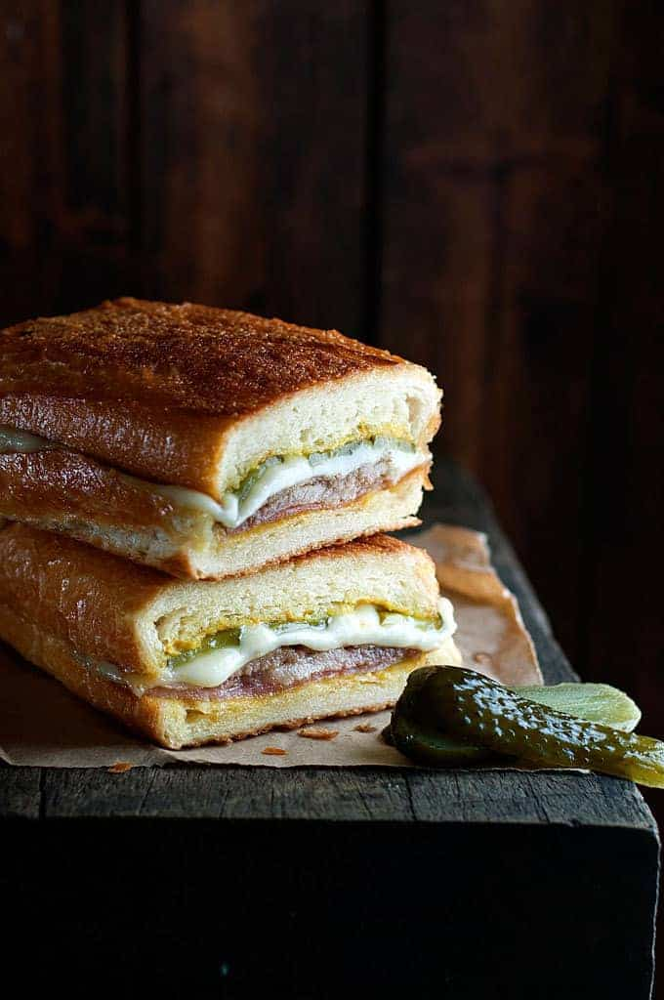

Cubanos

Cubanos / A Cuban Sandwich from the movie: Chef
A Cuban sandwich is a variation of a ham and cheese sandwich that likely originated in cafes catering to Cuban
workers in Tampa or Key West, two early Cuban immigrant communities in Florida centered on the cigar industry.
Later on, Cuban exiles and expatriates brought it to Miami, where it is also very popular.
Ingredients
- 2 thin slices of baked leg ham
- 4 large thin slices of Mojo marinated pork
- 2 pieces of white baguettes, 6 inches in length and cut in half
- Melted butter, for brushing
- American mustard
- 2 thin slices of Swiss cheese
- 2 dill pickles, thinly sliced
Recipe Instructions
- Heat skillet over medium heat. Add ham and pork slices, and cook each side until slightly browned then
remove to a plate.
- Butter cut sides of baguettes then place in the skillet, cut side down, for 2 minutes until lightly browned.
Remove onto work surface.
- Layer the bottom of the baguettes with pork, ham, then cheese and pickles. Cut, break or fold the ham, pork
and cheese so they fit. Spread the cut side of the bun tops with mustard then place on the sandwich.
- Butter the bottom AND top of the outside of the baguettes.
- Heat skillet over medium high heat. Place the baguettes in the skillet, top with a sheet of baking paper
then weigh it down with a heavy skillet or pot (use cans if necessary for extra weight so the sandwich
compressed). Cook for 3 minutes on each side, until dark golden brown and crispy, and the cheese is melted.
- Let sandwiches stand 1 minute before cutting in half. Serve IMMEDIATELY.
Return to main page